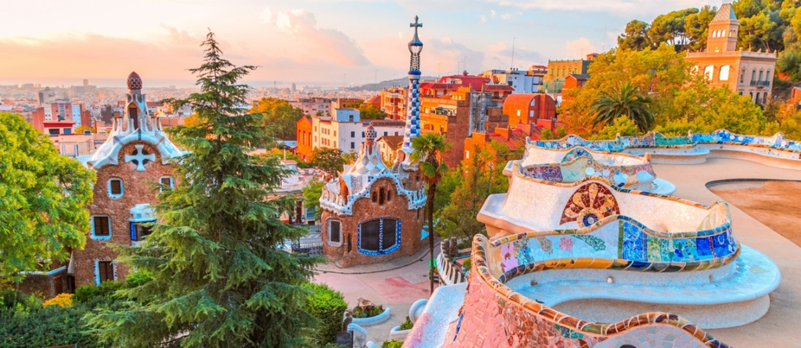
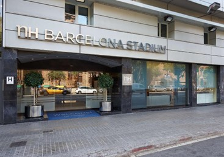

Plan putovanja Barselona:
DAN 1 - SAGRADA FAMILIA
Ova bazilika je najposećenija turistička atrakcija u Španiji ispred Muzeja Prado u Madridu i Alhambre u Granadi. Nalazi se na Uneskovoj listi Svetske baštine. Kada bude izgrađena centralna “kula Isusa Hrista” učiniće ovu građevinu najvišim verskim hramom u Evropi sa 172.5m visine. Kula će imati pet visokih tornjeva od kojih će jedan biti posvećen Bogorodici i četiri malo niža tornja.
DAN 2 - PARK GUELJ

Park predstavlja spoj prirode i arhitektonskih elemenata u prepoznatljivom Gaudijevom stilu. Centralno mesto parka je velika terasa sa koje se pruža jedinstven panoramski pogled na Barselonu i na dve bajkovite kućice koje su deo parka. Terasa je okružena klupom u obliku morske zmije i dekorisana mozaikom od polomljenih keramičkih pločica. U parku se nalazi i Gaudijeva kuća. Park Guelj nalazi se na Uneskovoj listi Svetske baštine.
DAN 3 - CAMP NOU
Kamp nou je fudbalski stadion u Kataloniji (Španija) i smešten je u Barseloni. Domaćin stadiona je španski i evropski poznati fudbalski klub FK Barselona. Najpopularniji evropski stadion, može da primi 98.600 gledalaca. Kamp Nou je najveći stadion u Evropi. Ovaj veličanstveni stadion izgrađen je za samo tri godine! Izgradnja je počela u martu 1954. jer je prethodni stadion Barselone postao premali za rastuću popularnost kluba. Projekat je koštao 1,7 milijardi evra. Zvanično je otvoren 24. septembra 1957. godine.
REZERVACIJA PUTOVANJA

Avio aranžman:
Autobus aranžman:
Izvršite rezervaciju